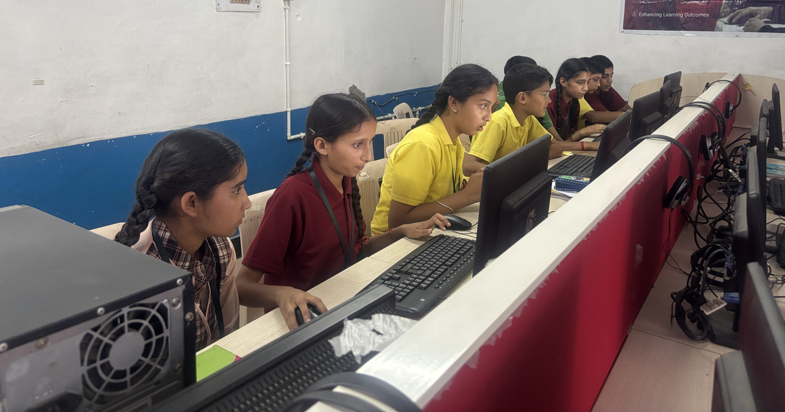

Available
Cohort 1 Gallery: Kotli
Explore photos and video moments from Digital Disha's first cohort at Government High School, Kotli, where 24 students learned computer basics, creative tools, internet use, and web design.